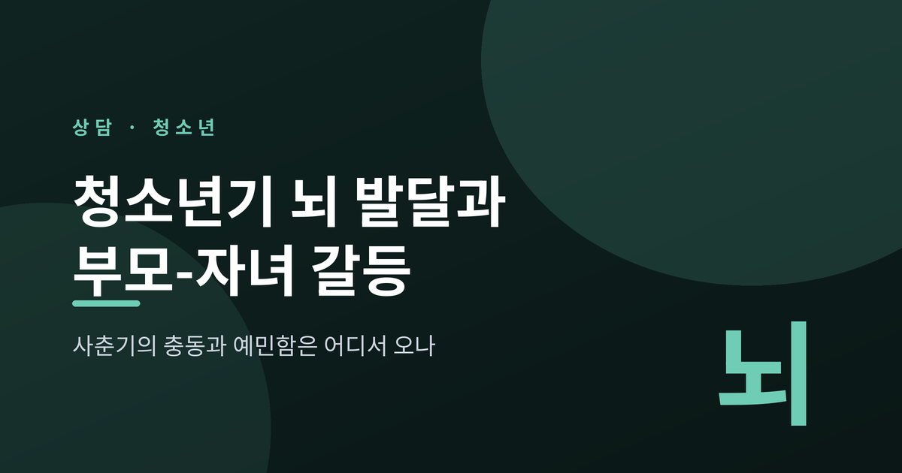
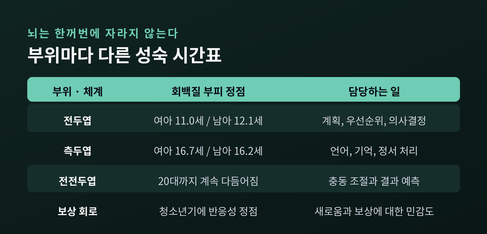
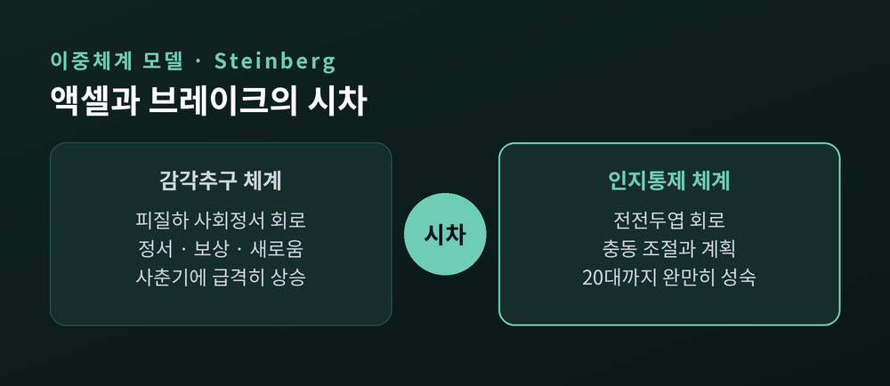
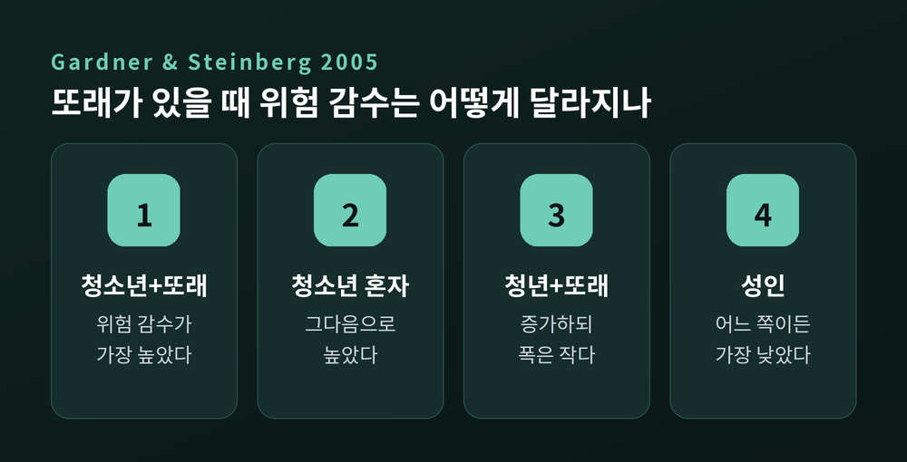
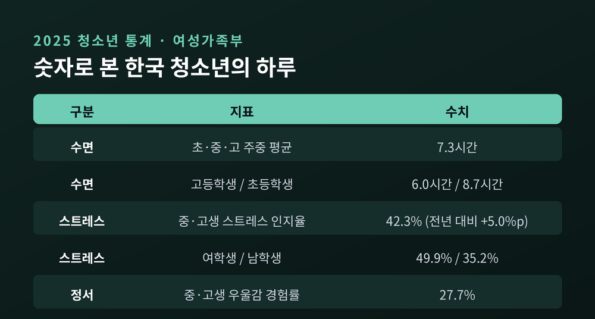
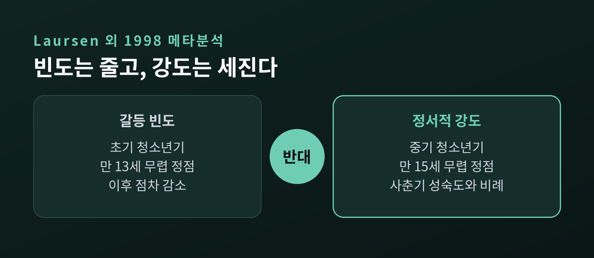
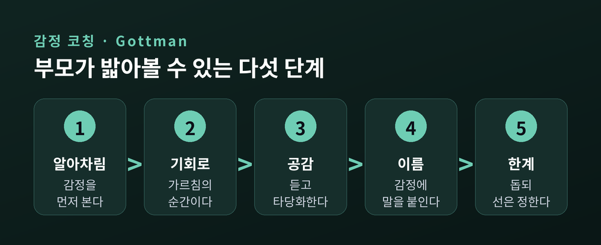

이번 글에서는 청소년기 뇌 발달이 사춘기의 충동과 예민함을 어떻게 만들어내는지 정리해 보겠습니다. 부모와 자녀가 유독 자주 부딪히는 시기의 배경에는 발달상의 이유가 있습니다. 그 이유를 알면 대응도 달라집니다.
세 줄 요약
먼저 오해 하나를 걷어내겠습니다.
십 대의 뇌는 미완성된 어른의 뇌가 아닙니다. 그 나이에 맞게 재편되고 있는 뇌입니다.
미국 국립정신건강연구소(NIMH)의 자료 『The Teen Brain: 7 Things to Know』는 이렇게 정리합니다. 뇌의 크기 자체는 청소년기 초반에 이미 다 자랍니다. 십 대는 크기를 키우는 시기가 아니라 뇌가 작동하는 방식을 정교하게 다듬는 시기입니다.
무엇이 다듬어지는지가 중요합니다.
NIH에서 4세부터 20세까지를 추적한 종단 MRI 연구(Giedd 등, 1999)는 대뇌 피질의 회백질이 뒤집힌 U자 곡선을 그린다는 사실을 보여줬습니다. 사춘기 직전까지 늘어나다가, 사춘기 이후 줄어듭니다. 전두엽 회백질의 정점은 여아 약 11.0세, 남아 약 12.1세였습니다. 측두엽은 그보다 훨씬 늦어 여아 약 16.7세, 남아 약 16.2세에 정점을 찍었습니다.
회백질이 줄어드는 것은 손실이 아닙니다. 쓰지 않는 시냅스를 정리하는 가지치기(synaptic pruning)와, 남은 회로에 절연을 입혀 신호를 빠르게 만드는 수초화(myelination)가 동시에 일어나는 과정입니다. 방을 넓히는 게 아니라, 자주 쓰는 물건만 남기고 동선을 정리하는 작업에 가깝습니다.
문제는 이 정리가 뇌 전체에서 동시에 끝나지 않는다는 점입니다.

이 시차를 가장 널리 쓰이는 설명 틀이 로렌스 스타인버그(Laurence Steinberg)의 이중체계 모델(Dual Systems Model)입니다.
모델은 두 개의 신경 시스템을 나눕니다.
하나는 피질하 사회정서 체계입니다. 정서와 보상과 새로움에 반응합니다. 감각추구를 담당하는 쪽입니다. 다른 하나는 전전두 인지통제 체계입니다. 충동을 조절하고 계획을 세우고 결과를 따지는 쪽입니다.
핵심은 두 체계의 우열이 아니라 타이밍입니다.
Shulman과 Steinberg 등이 2016년 『Developmental Cognitive Neuroscience』에 실은 재검토 논문은 이를 불균형 가설(imbalance hypothesis)로 요약합니다. 자기조절 능력의 완만한 성숙이, 감각추구의 급격한 상승 속도를 따라잡지 못합니다. 특히 청소년기 전반부에 그렇습니다.
시기별 궤적도 정리돼 있습니다. 아동기 후반부터 청소년기 초반까지 위험 행동이 늘어나는 것은 사춘기의 도파민계 재편 때문으로 봅니다. 보상에 반응하는 회로의 민감도가 이 시기에 정점을 이루는 경향이 반복 확인됐습니다. 반대로 청소년기 후반부터 위험 행동이 줄어드는 것은 전전두 영역의 가지치기와 수초화가 진행되면서 통제 체계가 자리를 잡기 때문입니다.
여러 연구가 만 14세에서 17세 구간을 위험 감수에 가장 취약한 시기로 봅니다.
자녀가 갑자기 무모해진 것처럼 보인다면, 성격이 변한 것이 아닐 수 있습니다. 액셀이 먼저 완성되고 브레이크가 뒤따라오는 중일 가능성이 높습니다.

부모가 자주 하는 질문이 있습니다. "혼자 있을 땐 멀쩡한데, 친구들만 만나면 왜 저럴까요."
이 질문에 대한 고전적인 실험이 있습니다.
Gardner와 Steinberg가 2005년 『Developmental Psychology』에 발표한 연구입니다. 총 306명을 세 연령대로 나눴습니다. 청소년(13~16세), 청년(18~22세), 성인(24세 이상)입니다. 참가자는 혼자 과제를 하거나, 같은 또래 두 명이 함께 있는 상태로 과제를 하도록 무작위 배정됐습니다. 과제는 충돌을 피하면서 차를 최대한 멀리 전진시키는 컴퓨터 운전 과제였습니다.
결과는 이렇습니다.
위험한 선택은 나이가 올라갈수록 줄었습니다. 그리고 모든 연령대가 혼자일 때보다 또래와 함께 있을 때 더 위험한 선택을 했습니다. 다만 그 또래 효과의 크기가 청소년에게서 가장 컸습니다. 위험 감수가 가장 높았던 집단은 '또래와 함께 있는 청소년'이었고, 그다음이 '혼자 있는 청소년'이었습니다. 성인은 혼자일 때나 또래와 있을 때나 가장 낮았습니다.
후속 연구는 한 걸음 더 나아갑니다. 부정적 결과의 확률을 명시적으로 알려준 상황에서도, 또래가 있으면 청소년의 위험 감수는 증가했습니다.
여기서 얻을 결론이 하나 있습니다. 청소년의 위험한 선택은 위험을 몰라서가 아닙니다. 알고 있는 상태에서도 또래라는 맥락이 선택을 바꿉니다. 그러니 "그게 위험한 줄 몰랐니"라는 말은 대개 과녁을 빗나갑니다.
NIMH도 같은 맥락을 짚습니다. 사회적 처리를 담당하는 영역이 변하면서 십 대는 또래 관계에 더 집중하게 되고, 이 점이 진행 중인 전전두엽 발달과 겹치면 '사회적 이득이 위험보다 커 보이는' 선택을 하게 될 수 있다는 설명입니다.

갈등의 상당 부분은 말이 아니라 표정에서 시작됩니다.
청소년의 정서 처리에 관한 신경영상 연구들은 흥미로운 차이를 보고합니다. 한 연구는 성인은 '두려운 얼굴'에 편도체 반응이 강해진 반면, 청소년은 '중립적인 얼굴'에 편도체 반응이 강해졌다고 보고했습니다. 연구자들은 청소년이 중립 표정을 모호한 신호로 지각했을 가능성을 제시합니다.
Yurgelun-Todd와 Killgore의 연구도 참고할 만합니다. 아동과 청소년에서 연령이 올라갈수록 두려운 자극에 대한 전전두엽 활성이 강해졌습니다. 정서를 해석할 때 전전두엽이 개입하는 정도가 나이와 함께 늘어난다는 뜻입니다.
이 차이가 식탁에서 어떻게 나타나는지 상상하기는 어렵지 않습니다.
퇴근한 부모의 피곤하고 담담한 얼굴이, 자녀에게는 '나를 못마땅해하는 얼굴'로 읽힐 수 있습니다. 부모는 아무 뜻 없이 쳐다봤을 뿐인데 자녀는 방문을 닫습니다. 부모는 그 반응을 반항으로 읽고, 자녀는 부모의 반응을 다시 확증으로 읽습니다.
같은 장면을 두 사람이 다르게 보고 있는 셈입니다.
취침 시간은 한국 가정에서 가장 흔한 갈등 주제 중 하나입니다. 여기에도 생리적 배경이 있습니다.
사춘기는 내인성 멜라토닌 분비를 1시간에서 3시간가량 뒤로 미룹니다. 그 결과 청소년의 일주기 리듬 자체가 늦춰집니다. 미국소아과학회 저널 블로그가 이를 '청소년기의 시차'라고 부른 이유입니다. 사회적 압력이 전혀 없는 상태에서도 청소년의 일주기 위상은 성인보다 지연되어 있습니다.
빛에 대한 반응도 다릅니다. 사춘기 이전 집단이 사춘기 이후 집단보다 빛에 대한 멜라토닌 억제 반응이 훨씬 컸다는 비교 연구가 있습니다. 연구진은 빛 민감도의 변화가 청소년의 취침 지연에 관여할 수 있다고 결론지었습니다.
문제는 이 밀려난 리듬이 현실과 부딪힌다는 데 있습니다.
여성가족부와 통계청의 「2025 청소년 통계」에 따르면, 2024년 기준 초·중·고 학생의 주중 평균 수면시간은 7.3시간입니다. 그런데 고등학생만 보면 6.0시간입니다. 초등학생 8.7시간과 비교하면 격차가 뚜렷합니다.
같은 통계에서 중·고등학생의 스트레스 인지율은 42.3%였습니다. 2023년 37.3%에서 5.0%p 올랐습니다. 여학생이 49.9%, 남학생이 35.2%로 차이가 있었고, 우울감 경험률은 27.7%였습니다.
생리적으로는 뒤로 밀린 리듬, 현실적으로는 이른 등교 시각. 그 사이에서 잠이 깎입니다. 부족한 잠은 정서 조절을 더 어렵게 만듭니다. 아침에 유난히 예민한 자녀를 두고 태도의 문제라고만 보기 어려운 이유입니다.

통념 하나를 다시 살펴보겠습니다. "사춘기가 되면 싸움이 늘어난다."
절반만 맞습니다.
Laursen, Coy, Collins가 1998년 『Child Development』에 발표한 메타분석은 부모-자녀 갈등을 세 갈래로 나눠 분석했습니다. 갈등의 빈도, 갈등의 정서적 강도, 그리고 총 갈등입니다.
결과는 서로 반대 방향으로 갈렸습니다.
빈도는 줄어듭니다. 갈등 빈도와 총 갈등은 초기 청소년기에서 중기로, 중기에서 후기로 가면서 감소했습니다. 빈도의 정점은 초기 청소년기, 대략 만 13세 무렵이었습니다.
강도는 세집니다. 갈등의 정서적 강도는 초기에서 중기 청소년기로 갈수록 증가했고, 정점은 대략 만 15세 무렵이었습니다. 사춘기 성숙도와 갈등 정서 강도 사이에는 양의 선형 관계가 확인됐습니다.
한 줄로 압축하면 이렇습니다. "싸우는 횟수는 줄어드는데, 한 번 싸우면 더 아픕니다."
예전에는 사소한 일로 자주 부딪혔습니다. 지금은 부딪히는 일이 줄었는데, 한 번 부딪히면 며칠이 무겁습니다. 많은 부모가 중학교 2~3학년 무렵 "예전보다 대화가 준 것 같은데 더 힘들다"고 느끼는 배경입니다.
무엇을 두고 부딪히는지도 조사돼 있습니다. 국내 연구에 따르면 갈등이 가장 심했던 주제는 연령과 무관하게 성적 및 진로였습니다. 그다음으로 고등학생에서는 방 청소, 활동 및 활동 통제, 취침 및 귀가 시간이 뒤를 이었습니다.

여기까지가 배경입니다. 그렇다면 무엇을 할 수 있을까요.
첫째, 통제를 늘리는 대신 감독으로 바꿉니다.
스타인버그는 청소년기의 권위 있는 양육을 세 요소로 구분했습니다. 수용과 관여, 엄격함과 감독, 그리고 심리적 자율성 허용입니다. 핵심은 균형입니다. 권위 있는 부모는 십 대를 통제하기보다 지켜보며, 규칙과 그 위반에 따르는 결과를 정하는 과정에 자녀를 참여시킵니다. 이런 가정의 청소년은 심리사회적 유능감, 학업 유능감, 내재화된 고통, 문제 행동 측면에서 이점을 보였고, 이 이점은 시간이 지나도 안정적이었습니다.
둘째, 자율성 지지와 심리적 통제를 구분합니다.
자기결정성 이론 계열 연구에서 자주 오해되는 지점입니다. 자율성 지지는 경계를 두지 않는다는 뜻이 아닙니다. 경계를 두되, 왜 그런 결정을 내렸는지 명확하고 존중하는 태도로 설명하는 것을 말합니다.
반대편에 있는 것이 심리적 통제입니다. 표현을 억누르게 하기, 죄책감을 유발하기, 감정을 무효화하기 같은 방식입니다. 연구들은 심리적 통제가 청소년의 자율적 기능과 정신건강에 부정적으로 관련된다고 보고합니다.
한 가지 덧붙이겠습니다. 자율성 지지와 심리적 통제는 한 축의 양 끝이 아니라 별개의 구성개념입니다. 따뜻하면서 동시에 통제적일 수 있다는 뜻입니다. 애정이 있으니 괜찮다는 판단은 위험할 수 있습니다.
셋째, 감정에 먼저 이름을 붙입니다.
가트맨(Gottman)의 감정 코칭은 다섯 단계로 정리됩니다. 자녀의 감정을 알아차리고, 그 표현을 친밀함과 가르침의 기회로 인식하고, 공감하며 듣고 감정을 타당화하고, 감정에 이름을 붙이도록 돕고, 마지막으로 문제 해결을 도우면서 한계를 설정하는 것입니다.
부모가 감정 자체에 대해 갖는 신념과 태도를 메타 정서 철학이라고 부릅니다. 정서 자각 수준이 높고 감정 코칭을 하는 부모의 태도는 아동의 긍정적 사회정서 결과와 관련돼 왔습니다. 가트맨의 종단 연구는 감정 코칭을 받은 아이들이 십 대가 되었을 때 고위험 행동에 관여할 가능성이 더 낮았다고 보고합니다.
다만 효과의 크기와 범위는 연구마다 편차가 있습니다. 만능 해법은 아닙니다.
넷째, 새로운 경험의 통로를 막지 않습니다.
NIMH는 십 대의 뇌가 새로운 경험에 적응하는 능력이 뛰어나다는 점을 함께 강조합니다. 도전적인 학습, 운동, 예술 같은 창의적 활동이 뇌 회로를 강화하고 성숙을 돕습니다. 감각추구는 위험 요인이기만 한 것이 아닙니다. 어디로 향하게 하느냐의 문제입니다.

한계도 함께 적어두겠습니다.
"뇌는 25세에 완성된다"는 문장은 널리 퍼져 있습니다. NIMH도 뇌의 발달과 성숙이 20대 중후반까지 이어진다고 표현합니다.
그런데 이 명제에 대한 비판도 분명합니다.
인간의 뇌 발달이 20대까지 이어진다는 점은 대체로 지지되지만, 25세에 뚜렷한 분기점이 있다거나 그 이전 사람들이 의사결정 능력이 떨어진다는 강한 증거는 없습니다. 하버드의 리아 서머빌은 뇌 영역별 구조가 생애에 걸쳐 서로 다른 속도로 커지고 줄어든다고 지적하며, 일부 8세 아동의 성숙 지표가 일부 25세 성인보다 높게 나타났다고 보고했습니다.
'25세'는 실제 발견에 뿌리를 두었지만, 훨씬 길고 복잡한 과정을 지나치게 단순화한 숫자입니다. 최근 연구는 그 발달이 30대까지 이어진다고 시사하기도 합니다.
그러니 이렇게 말하는 편이 정확합니다. 뇌는 20대까지 계속 다듬어지며, 개인차가 큽니다. 나이는 참고선이지 판정선이 아닙니다.
발달 지식이 "그러니까 아직 어려서 그래"라는 체념의 근거로 쓰이면 곤란합니다. 설명은 이해를 돕기 위한 것이지, 책임을 면제하기 위한 것이 아닙니다.
끝으로 한 마디만 더 드리겠습니다.
이 글에서 다룬 연구들이 공통으로 가리키는 방향은 하나입니다. 사춘기의 충동과 예민함은 아이의 인격이 아니라 발달의 시간표에서 나옵니다. 액셀과 브레이크가 완성되는 시점이 다를 뿐입니다.
그 시차를 아는 부모는 조금 덜 놀랍니다. 덜 놀란 부모는 조금 덜 무섭게 말합니다.
자녀가 변하기를 기다리는 대신, 그 시차를 견디는 쪽을 택할 수 있겠느냐고 물으신다면 — 저는 그쪽이 훨씬 해볼 만하다고 답하겠습니다.